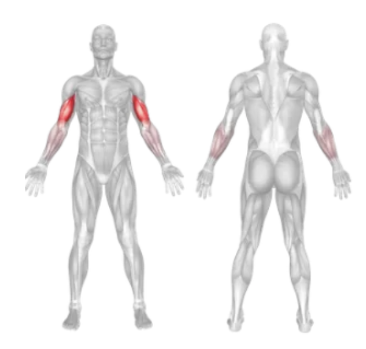
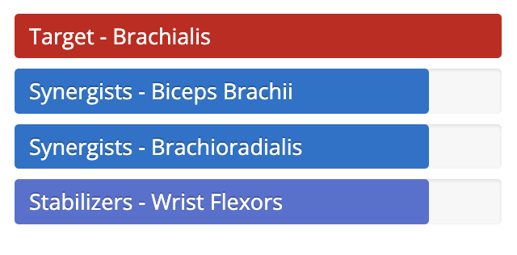

Setup
- Adjust the seat height on the preacher curl bench so that your upper arms rest flat on the pad.
- Sit down and grip an EZ curl bar or straight bar with an underhand grip (palms facing up), shoulder-width apart.
- Rest your triceps fully on the preacher pad, keeping your chest up and back straight.
- Start with your arms extended but not locked, holding the bar with control.
Execution
- Curl Up: Exhale and curl the bar upward by contracting your biceps, keeping your upper arms fixed to the pad.
- Squeeze: At the top of the curl, squeeze your biceps and hold briefly.
- Lower Slowly: Inhale and slowly lower the bar back to the starting position, fully extending your arms.
Tips for Effectiveness
- Don't Swing: Avoid using momentum or lifting your elbows off the pad.
- Full Range of Motion: Allow your arms to fully extend at the bottom for maximum stretch.
- Use Moderate Weight: Too heavy a load can reduce form and increase injury risk.
- Keep Wrists Neutral: Avoid bending wrists to reduce strain on joints.
Benefits of Preacher Curl
- Biceps Isolation: Strict form eliminates assistance from other muscles, maximizing biceps work.
- Improved Biceps Peak: Emphasizes the lower portion of the biceps for fuller development.
- Controlled Movement: Pad support promotes slow, focused reps.
- Reduces Cheating: Encourages clean form and strict motion for better results.
Muscles Worked in the Lat Pull Down

